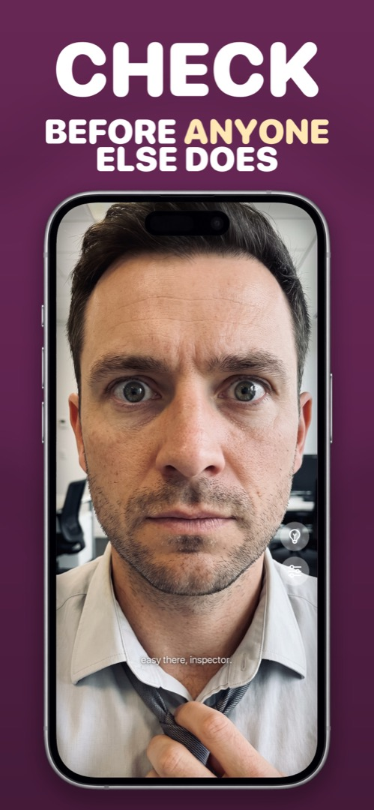

How to Use Your iPhone as a Mirror
You're in a car, a queue for the office bathroom, or at a restaurant table, and the only reflective thing you own is your phone. Good news: an iPhone makes a perfectly usable mirror — if you know which of the three methods to reach for.
Method 1: The black-screen trick
Lock your iPhone, tilt the dark glass toward your face, and you'll see a faint reflection. It works in a pinch, but it's dim, low-contrast and useless unless the room is bright and the background behind you is dark. Think of it as the emergency option.
Method 2: The Camera app on the front camera
Open Camera, flip to the selfie lens, and you get a live view of your face. This is what most people do, and it's fine for a two-second glance. The problems show up when you actually try to use it as a mirror:
- The shutter button is right where your thumb lands, so you keep taking accidental photos (and filling your library with unflattering close-ups).
- The preview is cluttered with mode labels, the zoom wheel and the flash toggle.
- Brightness stays wherever it was — usually too dim to see detail.
- There's no front-facing light. The "Retina Flash" only fires for a split second when you actually take a picture.
- Depending on your settings, what you see and what gets saved may be flipped differently, which is confusing (we explain why in why the front camera flips your face).
Method 3: A dedicated mirror app
A proper mirror app uses the same front camera but behaves like a real mirror instead of a camera. The things that separate a good one from a gimmick:
- Full-screen, edge-to-edge view with no shutter to hit by accident.
- Always mirrored, exactly like glass, so raising your right hand raises the hand on the right.
- Maximum screen brightness the moment it opens.
- A built-in light — the screen edges glow white so your face is lit even in a dark car.
- Zoom for eyebrows, teeth and contact lenses.
- Nothing saved — no photos, no video, no face data leaving the phone.
One thing to clear up, because Google mixes them together: this has nothing to do with screen mirroring. That's the Control Center feature for casting your iPhone to a TV. A mirror app is a mirror.
How to do it in Mirrorly
Mirrorly is built around exactly that list. Here's the whole process:
- Download Mirrorly from the App Store and open it. The front camera turns on immediately — no menus, no sign-up. Screen brightness goes to maximum on its own.
- Hold the phone at arm's length like a compact mirror. What you see is mirrored the way real glass is.
- Tap the light-bulb button if the room is dim. The edges of the screen turn bright white and light your face.
- Pinch or drag the zoom slider to get close on teeth, brows or lenses.
- Done? Just close the app. Nothing was photographed, recorded or uploaded.

Mirrorly is free on the App Store. A full-screen iPhone mirror with a built-in light, zoom and maximum brightness. No photos saved, no account, no ads.